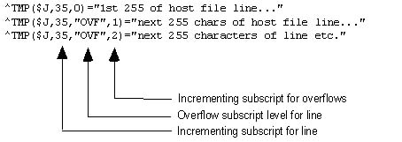

|
|
|
Reference Type: Supported, Category: Host Files, ICR#: 2320
The $$FTG^%ZISH extrinsic function loads a Host file into a global. Each line of
the Host file becomes the value of one node in the global. You do not need to
open the Host file before making this call; it is opened and closed by
$$FTG^%ZISH.
If a line from a Host file exceeds 255 characters in
length, the overflows are stored in overflow nodes for that line, as
follows:
|  |
$$FTG^%ZISH(path,filename,global_ref,inc_subscr[,ovfsub])
| path: |
(required) Full path, up to but not including the filename. |
| filename: |
(required) Name of the file to open. |
| global_ref: |
(required) Global reference to WRITE Host file to, in fully
resolved (closed root) format. This function does not KILL the global before
writing to it.
|
| inc_subscr: |
(required) Identifies the incrementing subscript level. For
example, if you pass ^TMP(115,1,1,0) as the global_ref parameter and pass
3 as
the inc_subscr parameter, $$FTG^%ZISH increments the third subscript
[e.g., ^TMP(115,1,x)], but WRITEs nodes at the full global reference
|
| ovfsub: |
(optional) Name of subscript level at which overflow nodes for lines (if any) should be stored. Overflows occur if a line is greater than 255 characters. Further overflows occur for every additional 255 characters. The default subscript name at which overflows are stored for a line is "OVF". |
| returns: |
Returns:
|
>S Y=$$FTG^%ZISH("USER$:[COMMON]","MYFILE.DAT",$NA(^MYGLOBAL(612,1,0)),2)
|